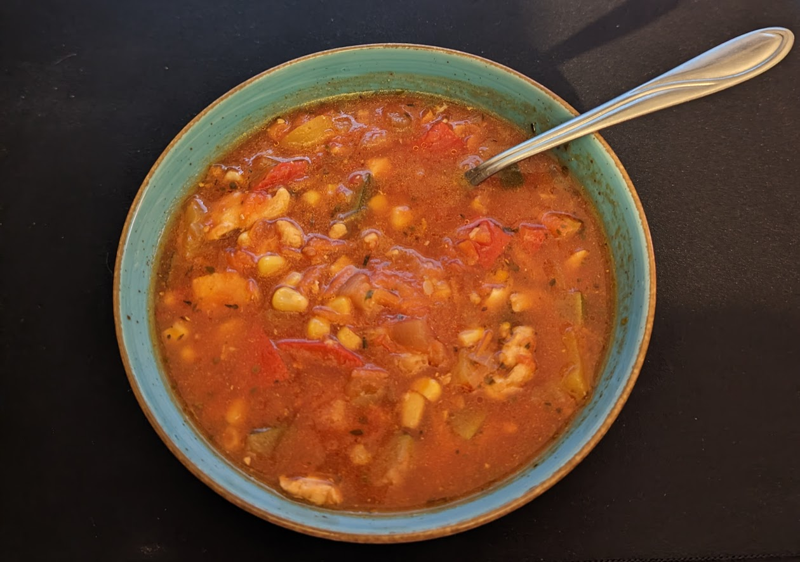

Chicken Vegetable Soup

Description
Chicken Vegetable Soup is my Mom's own recipe. It's easy and fast to make. Besides that, it's healthy and delicious. You can serve it with bread (e.g garlic croutons). It's one of my favorites soups that I've eaten.
Ingredients
- 2 chicken breasts
- Onion
- 4 garlic cloves
- 2 paprikas (red, yellow, green)
- 1 carrot
- Small courgette
- 1 can of corn
- 2 cans of tomato's or 6 fresh pealed tomato's
- 0.5l of water
- Frying oil
- Spices
- Salt
- Black and herbal pepper
- Sweet and spicy paprika
- One or two teaspoons of sugar
- Allspice
- Bay leaf
- Oregano
Steps
- Wash chicken breasts, dry it with paper towel and slice it in 4cm x 1cm rectangles. Season it with salt and paprika.
- While frying it, add cube sliced onion, at the end add garlic and fry it for two more minutes.
- Pour water to the pot, add bay leaf, allspice and boil it.
- Add fried chicken with onion, sliced paprika and tarted carrot. Boil it for about 3 minutes.
- Add cube sliced courgette and boil it for the next 3 minutes.
- Add rinsed corn, tomato's, sugar, oregano (about 2 tablespoons).
- After boiling everything for a while, season it with the rest of the spices for taste. Boil it for 5 more minutes.
Enjoy it!